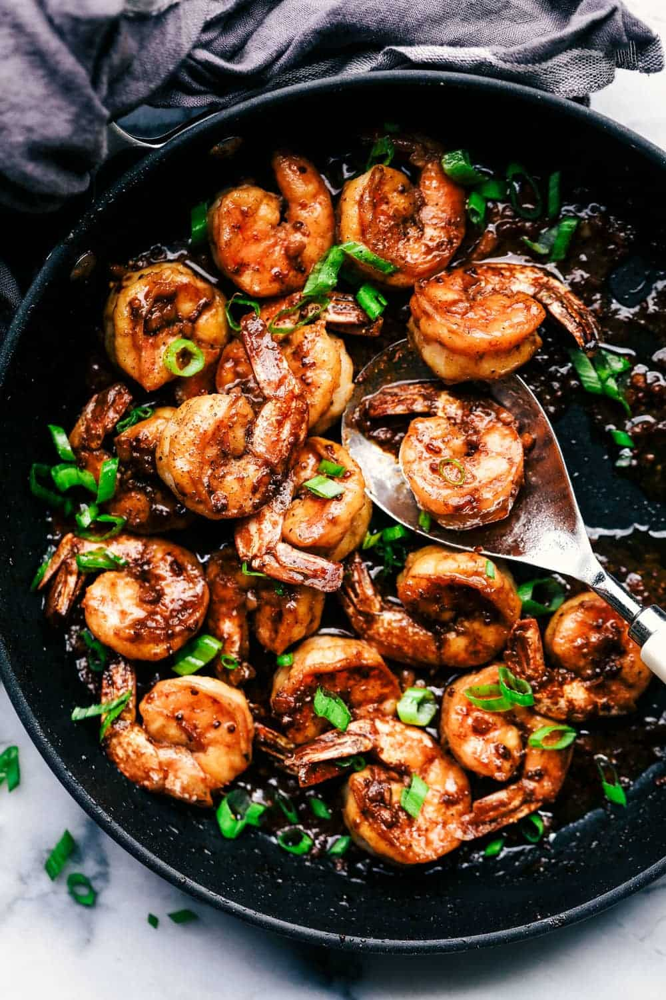

Sheet Pan Cajun Butter Shrimp

Homemade Cajun seasoning and butter are the main stars in this simple dish. Serve with rice or grits drizzled with the pan sauce, or serve as an appetizer. Also delicious tossed with buttered noodles.
I am a firm believer that if you hate a certain type of food, you can slowly but surely start to like it. Take me for example. I despised all fish and seafood growing up. When I had my first son, I realized that I had to start putting seafood apart of my diet and that my metabolism with each kid was decreasing. The donuts were now sticking to the thighs. ha! So I started to eat salmon. I slowly started to eat salmon that was smothered in some sort of delicious sauce. And guess what? Salmon is now my favorite to choose at a restaurant.
But shrimp!? There was no way that I would ever grow to like it. The problem is I have married a shrimp lover. So I promised him that he could choose a shrimp recipe every other week for me to make. And of course, I have to try it right? Well, I am happy to report that it is slowly starting to grow on me and now I can actually eat it! This shrimp recipe became one of my favorites with the first bite. The unique sauce combination comes together in this recipe and makes it incredible!
Ingredients
Cajun Seasoning
- 1 teaspoon smoked paprika
- ½ teaspoon garlic powder
- ½ teaspoon onion powder
- ½ teaspoon salt
- ½ teaspoon dried oregano
- ¼ teaspoon freshly ground black pepper
- ¼ teaspoon cayenne pepper
- ¼ teaspoon dried thyme
Shrimp
- 2 pounds extra large shrimp, peeled and deveined
- 2 tablespoons olive oil
- ½ cup butter, cubed and at room temperature
- 2 tablespoons minced fresh parsley (Optional)
- 6 lemon wedges (optional)
Steps
- Preheat the oven to 400 degrees F (200 degrees C).
- Combine smoked paprika, garlic powder, onion powder, salt, oregano, pepper, cayenne pepper, and thyme in a small bowl. Pat shrimp dry and place in a large bowl. Sprinkle with Cajun seasoning mixture and drizzle with olive oil. Toss to coat evenly.
- Place shrimp in a single layer on a sheet pan without overcrowding.
- Cook in the preheated oven until shrimp are opaque in the middle, about 8 minutes. Immediately add butter to the hot pan and toss with shrimp until butter is melted. Sprinkle with parsley, if desired and serve with lemon wedges.